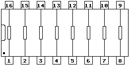

Previous
Next
TOC
Um die Datensicherheit zwischen den verschiedenen Computertypen und
der Festplatte weiter zu erhöhen haben die ATARI Ingenieure fol-
gende Verbesserungsvorschläge erarbeitet: (ACSI Data Time Fix)
1. MEGAFILE 30/60 (Ref. ECO Nr.1387)
Tauschen Sie die 33 Ohm Widerstände R20 bis 24 gegen 10 Ohm Typen
aus.
Ersetzen Sie U25 (74LS132) durch einen 74F00
Ersetzen Sie U3 (74LS51) durch einen 74F51
Ersetzen Sie U30 (74LS245) durch einen 74F245
2. MEGAFILE 20/SH205 (Ref. ECO Nr.1389)
Tauschen Sie die 68 Ohm Widerstände R63 und R64 gegen 10 Ohm Typen
aus.
Ersetzen Sie U1 (74LS08) durch einen 74F08
Ersetzen Sie U2 (74LS32) durch einen 74F32
Ersetzen Sie U22 (74LS245) durch einen 74F245
3. MEGAFILE 44 (Ref. ECO Nr.1390)
Ersetzen Sie das 33 Ohm Widerstands-Array RP1 gegen eines mit 10 Ohm
Ersetzen Sie U4 (74LS132) durch einen 74F00
Ersetzen Sie U12 (74LS245) durch einen 74F245
Zu dem Widerstandsnetzwerk (Widerstands-Array) RP1:
BI ist das Suffix für Beckmann Industrial, weiterhin sind das
Standardbauteile (sollte also jeder Händler besorgen können!). Zu-
mindest die 33 Ohm Ausführung sollte lieferbar sein, zur not einfach
zwei 33 Ohm Widerstandsnetzwerke huckepack übereinander löten um auf
einen Widerstandswert von 16,5 Ohm zu kommen. 898-3-R33 ist die
Typenbezeichnung, wenn wirklich keine aufzutreiben sind, einfach das
Widerstandsnetzwerk auslöten und durch 8 Einzelwiderstände von je
10 Ohm ersetzen.
Das Schaltbild des Widerstandsnetzwerkes ist im folgenden Bild zu
sehen:

Kapitel Von ATARI modifierte Hardware, Seite 1